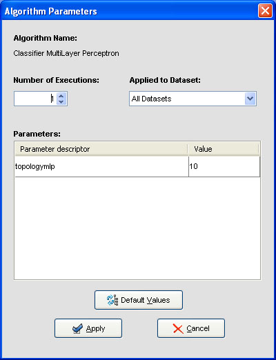

ALGORITHM PARAMETERS CONFIGURATION
Once the algorithm has been inserted, we can configure the value of its parameters. To do so, you must double click on the algorithm symbol and a dialog is shown.

At the top of this dialog we can indicate the number of times we want to run the algorithm (only available for random methods). Each execution will be made using a seed generated from the initial seed.